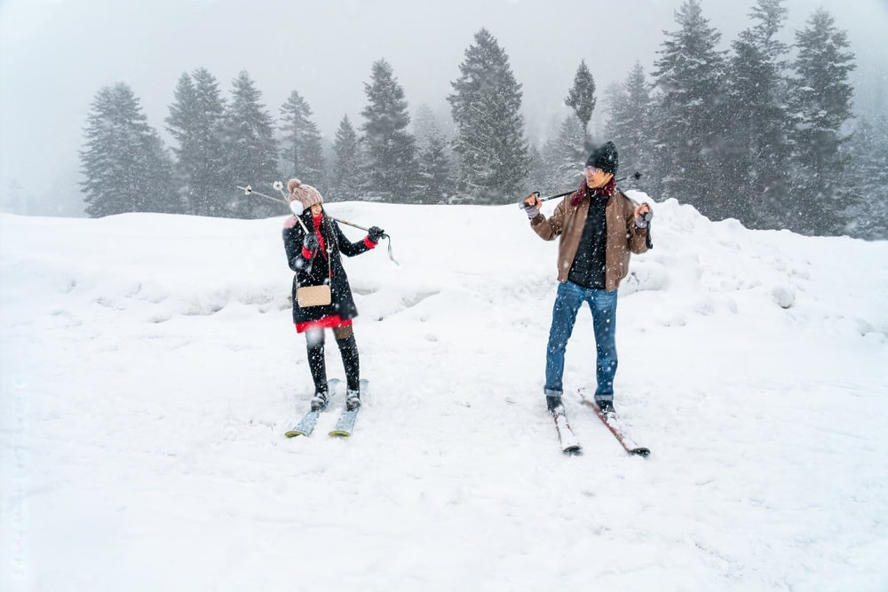
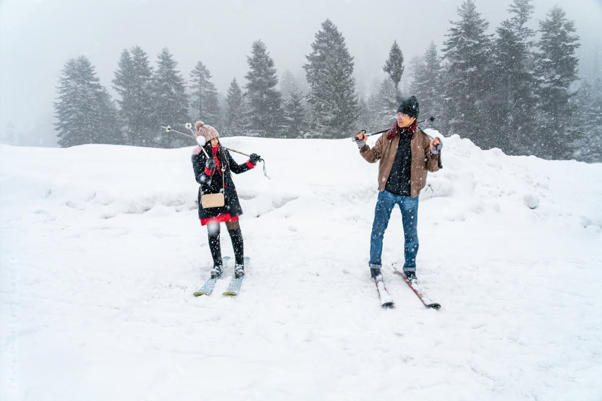
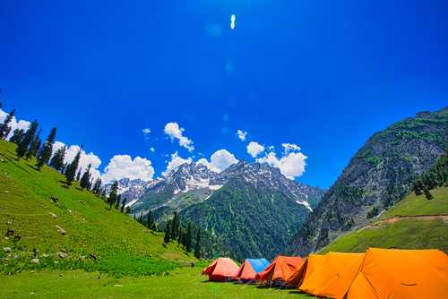
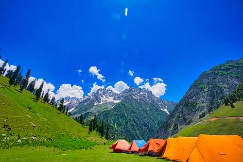
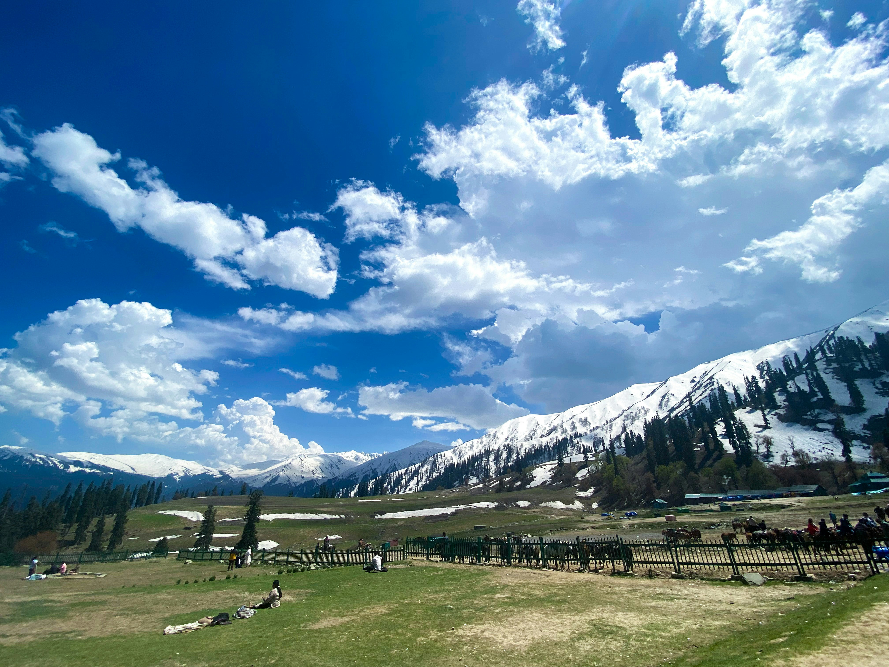
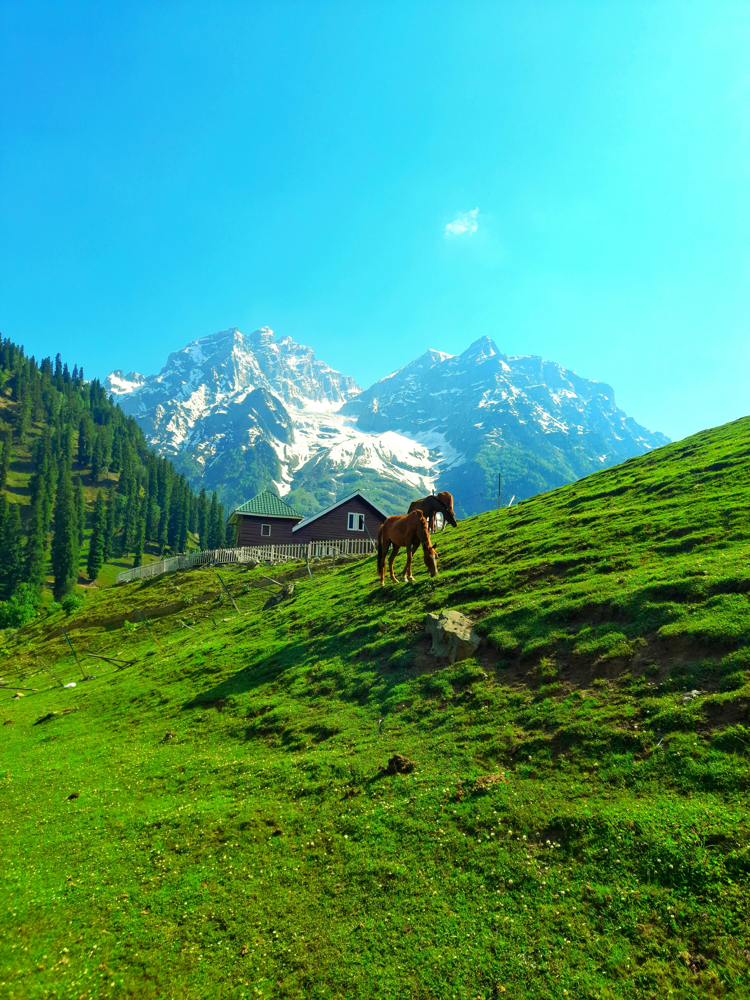
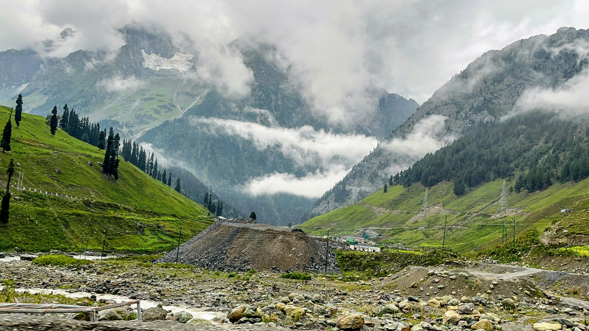

Highlights
- This Kashmir Tour is a fully loaded group holiday.
- Stay in Standard 3* Hotels in Sonmarg, Srinagar.
- All Meals and Evening Tea/Coffee with Snacks
- A stunning glacier located just a short trek or pony ride away from Sonmarg.
- A beautiful river that flows through Sonmarg, offering scenic views and a peaceful environment. Ideal for picnics and fishing, particularly for trout fishing enthusiasts.
- Sonmarg is an ideal location for outdoor activities like trekking, hiking, camping, and pony rides.
- In winter, snow sports like skiing and sledging become popular.
 


 

  
ExoticKashmirwithSonmarg
Day 1: Arrival in Srinagar
- Arrive at Srinagar airport and transfer to a hotel or houseboat.
- Relax and enjoy the serene beauty of Dal Lake.
- Optional: Take a peaceful Shikara ride on Dal Lake and explore the floating gardens and markets.
- Additional Activity: Visit the Mughal Gardens (Shalimar Bagh, Nishat Bagh) to admire the Persian-influenced landscaping.
- Additional Activity: Visit the Shankaracharya Temple, located on a hilltop, offering panoramic views of Srinagar.
Day 2: Srinagar to Sonmarg
- After breakfast, proceed to Sonmarg, also known as the "Meadow of Gold."
- Check into the hotel and relax amid breathtaking mountain views.
- Explore the meadows, take a short walk, or enjoy a picnic by the Sindh River.
- Additional Activity: Take a short horse ride around the meadows or along the Sindh River.
- Additional Activity: Try trout fishing in the Sindh River, which is popular for its crystal-clear waters.
Day 3: Sonmarg - Visit Thajiwas Glacier
- Take a day trip to Thajiwas Glacier, reachable by a short trek or pony ride.
- Witness the glacier and engage in snow activities like sledging, even in summer.
- Return to Sonmarg for an overnight stay.
- Additional Activity: Interact with the local Gujjar community to experience their unique way of life.
Day 4: Sonmarg - Excursion to Zoji La Pass (Optional)
- Take an adventurous drive to Zoji La Pass (subject to weather), the gateway to Ladakh.
- Experience panoramic views of the towering mountains and valley below.
- Return to Sonmarg for relaxation and leisure.
- Additional Activity: Try off-roading on ATV bikes or take a mountain biking trail near Zoji La Pass for an adrenaline rush.
Day 5: Sonmarg - Visit Nilagrad River
- Visit the scenic Nilagrad River, famous for its reddish-brown water believed to have healing properties.
- Relax by the river and enjoy the beautiful surroundings of meadows and pine forests.
- Leisure time in Sonmarg for nature walks or photography.
- Additional Activity: Capture sunset views over the river with the surrounding mountains as a backdrop for stunning photos.
Day 6: Sonmarg Local Exploration
- Explore Sonmarg at a relaxed pace.
- Optional activities: Go fishing in the Sindh River, take a guided hike, or enjoy a nature walk.
- Visit nearby meadows or spend the day absorbing the tranquil atmosphere.
- Additional Activity: Visit the Baltal Valley, which serves as the base camp for the Amarnath Yatra, to explore the scenic beauty of the area.
- Additional Activity: Take a guided bird-watching tour to spot Himalayan bird species like the Himalayan Monal.
Day 7: Departure from Sonmarg
- After breakfast, transfer back to Srinagar for the onward journey.
- End of the memorable Sonmarg tour.
- Additional Activity: Stop at Kangan en route to Srinagar to visit the local markets for souvenirs or handicrafts.